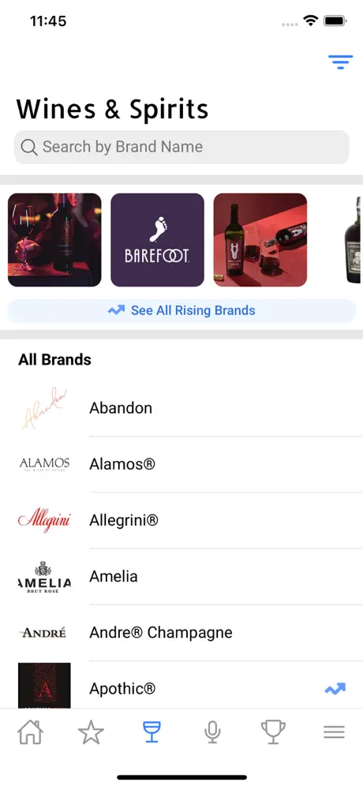
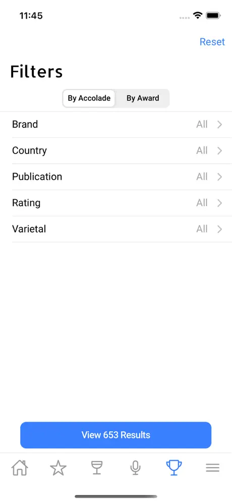

A field sales app for a large enterprise, in Xamarin.iOS
Gallo Gateway puts E. & J. Gallo Winery's whole sales, marketing and training library on a rep's phone: one-sheets, presentations, point-of-sale visuals, brand standards, podcasts and training material. The reps use it in a retailer's back room or a restaurant basement, where the signal is about as bad as you'd expect.
About the source code: Gallo Gateway is an E. & J. Gallo Winery product that I worked on while I was at {{co_a}}. The code belongs to the client, so there's no public repository. The architecture description below is my own.
Context & Scope
This was early in my career, and it was hard in a useful way. The app was an enterprise iOS app that had been around for years and was already several major versions in. It served a large field sales team in several markets. I was working at a small startup with limited resources, and I was one of very few people on the mobile side. Nothing was new or built from scratch. The job was to extend, modernise and keep stable an app that salespeople used every day to make money.
While I worked on it, the app got a full visual and structural redesign, added international markets and localisation, moved sign-in to Microsoft Azure, added iBeacon features for use in stores, and kept upgrading a long list of native plugins. Each of those sounds routine on a list. Each was hard on a shipped enterprise app whose users couldn't afford a bad release.
What made it hard
- The library is big and the network isn't reliable. A rep walking into a meeting needs their materials to be there. Having favourites available offline was a core feature.
- Heavy media on older phones. Presentations, videos, interactive 3D brand tours and podcasts that keep playing in the background, all competing for memory and storage on phones that weren't new.
- Xamarin.iOS, which works directly with UIKit. There's no cross-platform layer in between, only Xamarin's bindings. So you need real iOS knowledge: the view controller lifecycle, ARC and retain cycles between C# and native objects, and UIKit navigation.
- Changing sign-in for people already using the app. When you move sign-in to Microsoft Azure on an app people use every day, every edge case you miss is someone who can't get in that morning.
- Rolling out to more markets. International regions and languages added to an app that was first built for a US sales team.



App Store listing screenshots.
Architectural Blueprint
The app is built around a content pipeline with an offline layer. The library on the server is the source of truth. The phone keeps a limited set that the rep picks (their favourites), and that set has to be complete and open with no network. Everything else streams.
Amber marks the two paths that can't fail in front of a customer: offline favourites and sign-in. Everything else is allowed to get slower or fall back.
The main decisions
- The rep chooses what's offline. We didn't try to prefetch everything. Letting reps mark what they need keeps storage use predictable, and it makes a clear promise: anything you favourited is on the phone. If a background prefetcher guesses for them, the app is usually ready, and in front of a customer "usually" isn't good enough.
- Retain cycles kept coming up in Xamarin.iOS. When a native UIKit object holds a C# delegate, neither garbage collector can see the whole picture. Careful weak references at that point, and cleaning up properly in the view controller lifecycle, are what stop a media-heavy app from getting slower over a long session. These bugs only show up after an hour of real use.
- Beacons are mostly about the app lifecycle. The CoreLocation call itself is easy. The hard part is region monitoring that keeps working when the app goes to the background, gets terminated and is relaunched by the OS, without the sales team complaining about battery drain.
- The sign-in migration happened in stages. We kept the old sign-in working while the Azure one proved itself, and designed token handling so an expired token never kicked a rep out in the middle of a meeting. A sign-in migration has gone well when nobody notices it.
- Plugin upgrades were planned work. The app relied on a lot of native plugins. We kept them up to date instead of waiting for an iOS release to force it. It's boring work, and it does more than anything else to keep an old mobile app shippable.
What This Era Taught Me
This is the oldest work on the site, and I wasn't leading the architecture. I was learning. But it gave me the base for everything I've done since:
- iOS itself. Xamarin.iOS works directly against UIKit, so I learned the platform: the view controller lifecycle, memory rules, navigation and background execution. All of that carried over to Xamarin.Forms and then .NET MAUI. It's why I can debug what a cross-platform framework is doing instead of just using it.
- Offline is a promise to the user. I watched sales reps rely on their favourites in rooms with no signal, and that's where the views on the rest of this site come from. If the app keeps that promise, people trust it. If it doesn't, they find a way to work around it.
- Old enterprise apps live or die on maintenance. Over five years, keeping dependencies current, migrating in stages and not breaking what people use every day matter more than any single feature.
- Small team, big client. Working for a large enterprise from a small startup taught me to communicate in writing, be straight about scope, and treat the client's users as my responsibility too.
Scope & Impact
- 2.5 yrs
- Shipping regular releases of a live enterprise iOS app that a field sales team used every day.
- 4.x
- A full redesign for a major version, with a new visual style, onboarding and content model.
- Azure
- Sign-in moved to Microsoft Azure federated identity while people were using the app.
- {{m_a_regions}}
- Markets and regions supported after the international rollout. This is my estimate and wasn't measured.
You can check the version history and feature releases on the App Store listing linked at the top of this page.